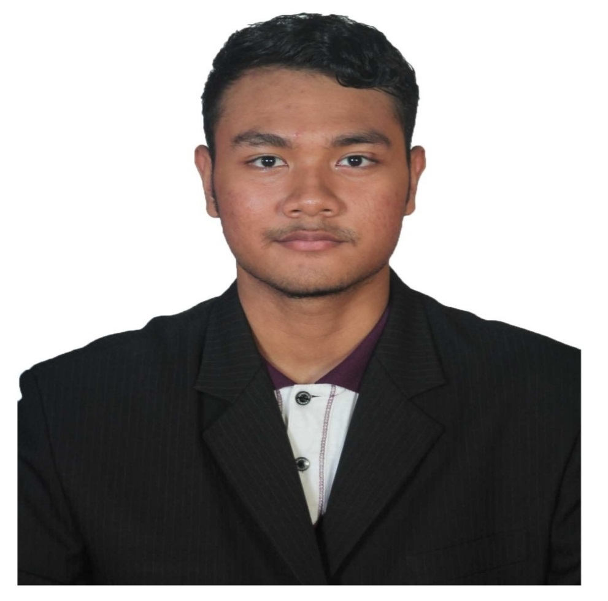

Muhammad Irsyad bin Murtadha
Subang Jaya |+60-183804497
Summary
I possess strong analytical, communication, and coordination skills. I'm
passionate about learning and keeping up with the latest developments in
the field, particularly in the context of Industrial Revolution 4.0. I'm
eager to broaden my knowledge and skillset to become a more proficient
professional in this field.
Experience
MIMOS Berhad | Kuala Lumpur, Kuala Lumpur
Research Officer | 06/2022 - 06/2023
Involved in a project called AIREM (Artificial Intelligence Residential
Monitoring), which is being funded by MOSTI (Minister of Science and
Technology). The aim of this project is to develop a single sensor that
collected high frequency data (voltage and current) that can be attached
to the main distribution box in a house, and use AI algorithms to
disaggregate the combined signal from multiple appliances. By doing so,
AIREM will enable homeowners to monitor their energy usage and identify
the appliances that consume the most energy, thus helping them to save
money on their utility bills.
Responsibilities
-
Collecting high frequency data (Instantaneous Voltage and Current) using
a Digitizer Card attached to a computer
-
Developing data preprocessing modules in Python to extract features from
high frequency data
-
Conducting research on Non-Intrusive Appliance Load Monitoring (NIALM)
algorithms by analyzing research papers and providing feedback to the
team.
-
Implementing research methods from papers using Python (Jupyter
Notebook) and MATLAB (MATLAB Live Editor).
-
Training Machine Learning models using extracted features from high
frequency data with Python Scikit-learn Package.
-
Building a Python simulator with multithreading programming to simulate
the sensor performance.
-
Designing monitoring dashboard for data from Python Simulator using IOT
ThingsBoard platform by connecting it with Python Simulator.
- Providing two research reports for company internal evaluation.
- Conducting a Survey Report for marketing strategy.
-
Become the main author of research paper for IEEE Control & System
Graduate Research Colloquium (ICSGRC 2023).
Education
KISMEC | Sungai Petani, Kedah
Experiencing Sensor and IOT | 04/2022
-
Learn basics of networking system (Wi-Fi Configuration, Cable
Installation and etc.).
-
Utilizing microcontrollers (Arduino,Esp32) by using Arduino Programming
Language.
-
Implementation and understanding of the MQTT Broker (Hivemq,AdaFruit).
-
Create some IOT mini projects (Temparature and Humidity Monitoring,
Voice Command, Servo Motor Control and etc.)
-
Understand the implementation of machine to machine communication
through the use of Bosch IoT Gateway.
-
Learn about the application and importance of sensors technology in
Internet of Things.
-
Practice programming the Bosch XDK 110 sensors to send data to Bosch IoT
Gateway.
-
Store data in database (SQL) and implement basic data visualisation.
Universiti Teknologi Malaysia | Johor Bahru, Johor
Bachelor of
Engineering (Nuclear) | 08/2021
- Graduated with CGPA: 3.28
-
Writing MATLAB code for simulation program to visualize neutron flux in
homogeneous and thermal reactor for Final Year Project. The code is
delivered to the lecturer for assisting the junior students for better
understanding of visualizing neutron flux
-
Group Leader in Nuclear Power Plant Design. Creating a documentation for
Advance Pressurized Water Reactor
-
Sports and Special Task Officer of Nuclear Engineering Student Society
(NESS) for 2019/2020 session. Managing the society's members data and
assisting in organizing the events held by the society's members
-
Representing Rugby College Team for UTM Sports Day in 2017/2018 (Kolej
Tun Hussein Onn (KTHO)) and 2019/2020 (Kolej Datin Seri Endon (KDSE))
session.
Skills
Python, SQL, Microsoft Excel, Microsoft Word, Linux, Java, JavaScript,
HTML, CSS, Python